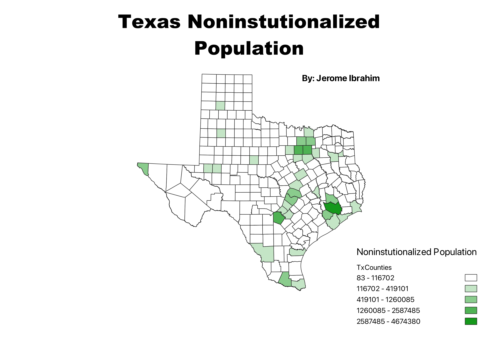

Homework 6: Census data choropleth
Jerome Ibrahim
This dynamic map of Texas offers a visual representation of the distribution of non-institutionalized populations
across the state's diverse counties. Each county is color-coded to reflect the density of non-institutionalized
residents, with darker shades indicating a higher concentration.

Data used for this project
CSV dataset
Link to shapefile